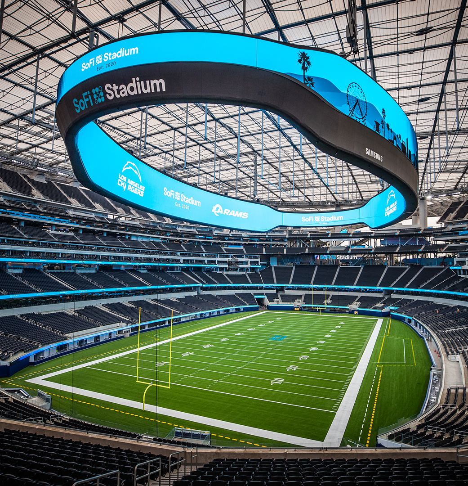
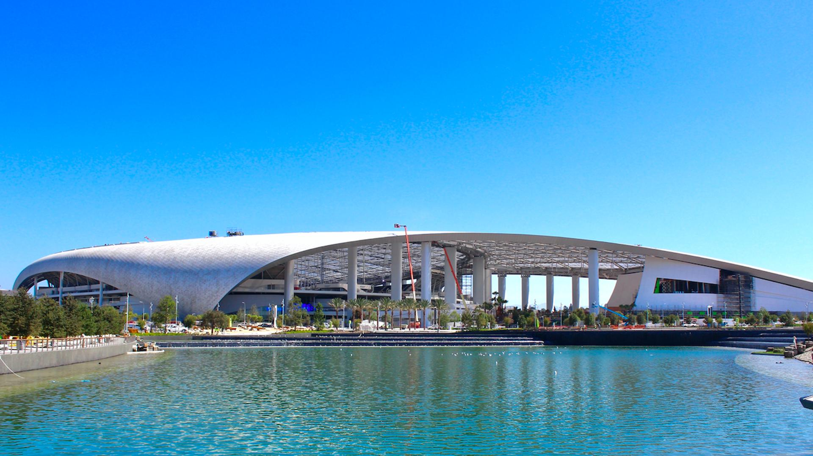
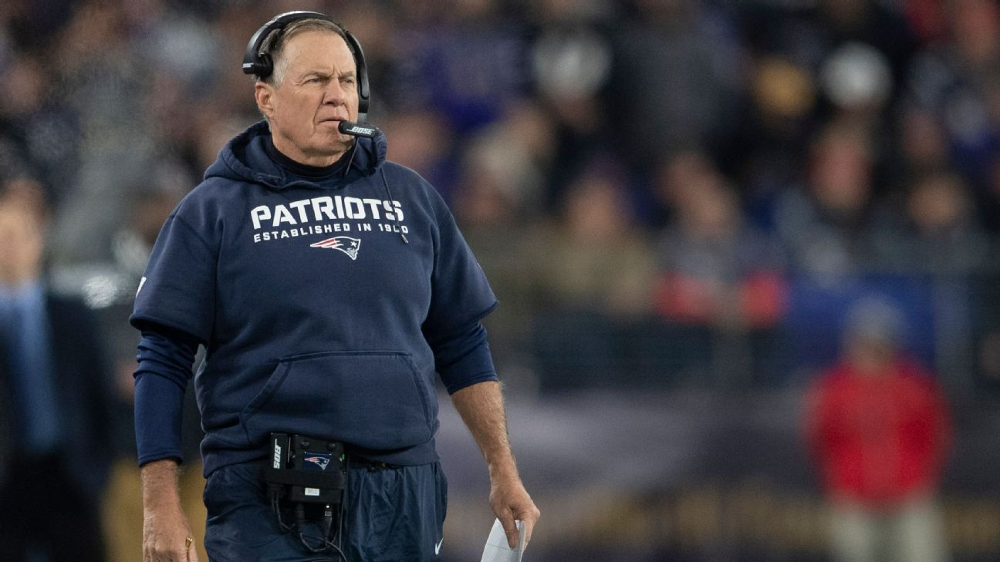
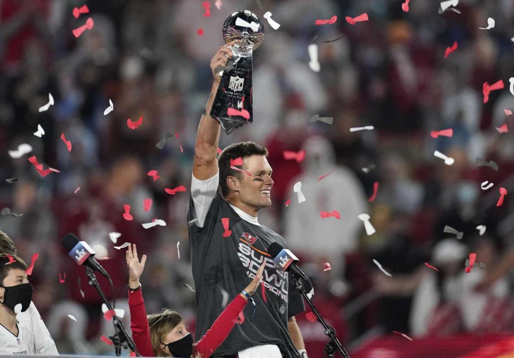

l'interieur du stade SoFi

L'exterieur du stade SoFi
Le Super bowl LVI ou 56 va se faire a Los Angeles le 13 février 2022. Le stade qu'il va acceuillir le Super Bowl sera le stade SoFi. Le stade a coute pres de 5 milliard de dollar americain. Le Super Bowl est le deuxième evenement sportif le plus regarde de l'année avec une moyenne de 100 000 000 millions de téléspectateur juste au état-unis.
Selon moi, les personnes qui vont s'opposé lors de se super bowl sont les patriotes de la nouvelle angleterre qui opposera les buccaneers de tampa bay. Je souhaite voir cette afrontement entre Tom brady et son ancien coach Bill Belichick.

Bill Belichick le coach des patriots

Tom brady (ancien quart-arrière des patriots)